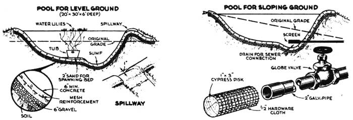
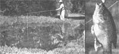

I step right out my back door into a fisherman's paradise. It's a small, homebuilt water hole so overflowing with mouthwatering bluegills that I can take out as many as 30 to 40 at a time.
A home fish pond is easy to build because it needn't be fancy-fish aren't fussy. Soon you have hours of relaxing fun as well as fresh, golden panfish such as you've never tasted before.
My pond is simply a shallow, irregular saucer scooped out by a tractor with a blade. No bulldozer is necessary. The sides are lined with a 1-2-3 mix of concrete. A bed of sand or gravel and steel reinforcing mesh is advisable in frost areas. A drainpipe allows water to be drawn off and replaced to keep the pond fresh. A tub of water lilies provides cool shade for the fish on hot days.
To stock the pond, fingerlings can be obtained inexpensively at any state hatchery. I bought bluegills because they multiply like crazy. In a small pond, some extra food is required to supplement the natural supply-about a pound of chopped liver a week. The fish love it. U.S. Department of Agriculture Bulletin No. 1983 gives valuable. information on raising fish in home ponds.
|
 |
 |
|